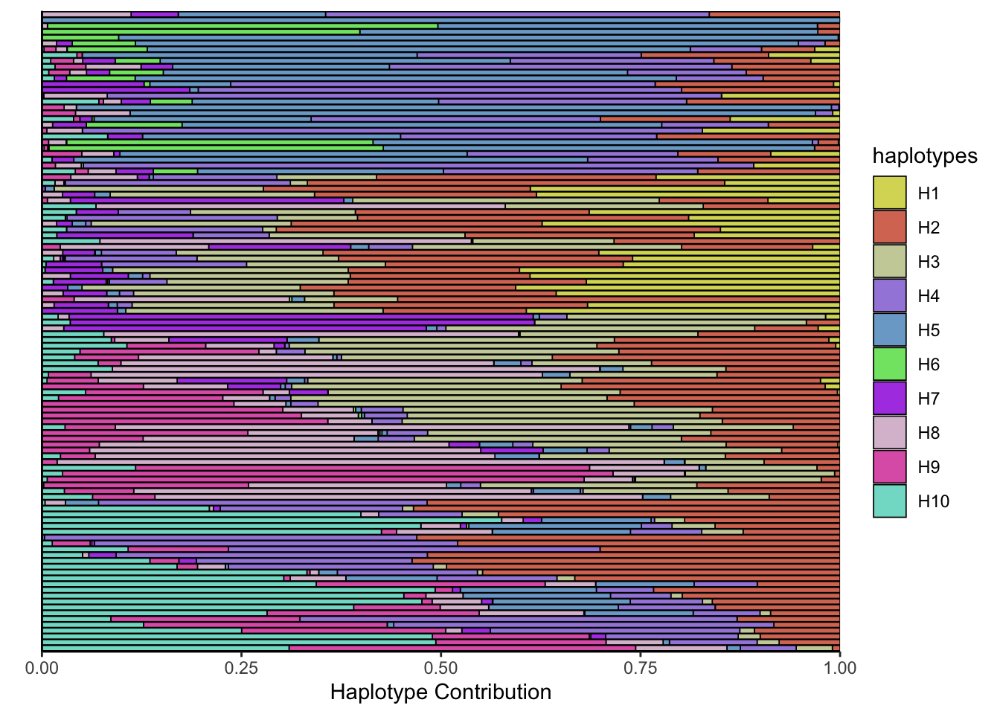
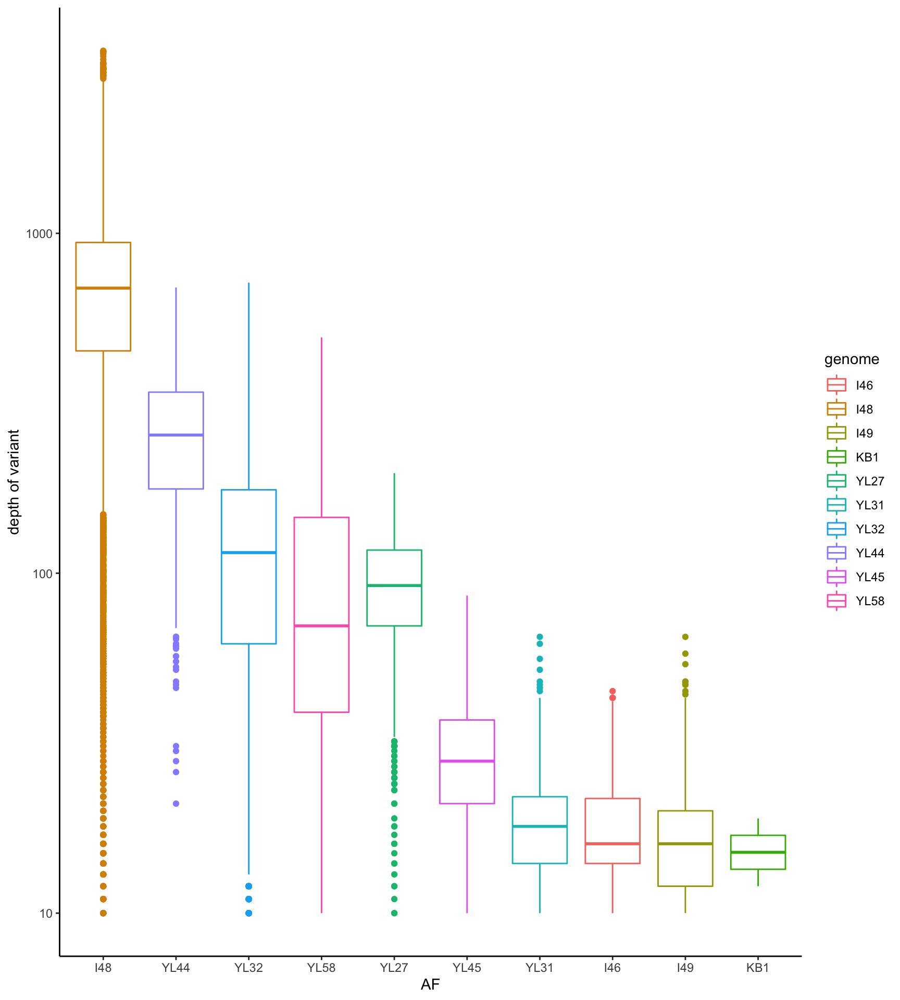

Section 4 AB Samples
4.1 Load in variants
vcfToDataframe <- function(vcf.files, contig_mapping = contig_mapping, gff.df = gff.df) {
require(vcfR)
res <- list()
for (file in vcf.files) {
library(data.table)
vcf.content <- vcfR::read.vcfR(file, verbose = FALSE)
vcf.fix <- as.data.frame(vcf.content@fix) # contains chr, position and substitution informations
vcf.info <- vcfR::INFO2df(vcf.content) # get INFO field, contains DP, AF informations
if(nrow(vcf.fix) > 0) { # there are variants
dat <- as.data.frame(cbind(vcf.fix[,c(1, 2, 4, 5, 6)], vcf.info[,c(1, 2)]))
dat$majorAF <- sapply(dat$AF, minorAfToMajorAf) # transforms e.g. AF of 0.1 to 0.9, 0.9 stays 0.9 and 0.5 stays 0.5
dat$genome <- contig_mapping[match(dat$CHROM, contig_mapping$contig),]$genome # map chr information to genome name e.g. NHMU01000001.1 -> i48
dat$genome_hr <- translateGenomeIdToFullName(tolower(dat$genome))
dat$mouse.id <- substr(tools::file_path_sans_ext(basename(file)), 1, 4)
dat$mouse.group <- translateMouseIdToTreatmentGroup(dat$mouse.id)
dat$day <- as.integer(substr(basename(file), 6, 7))
dat$phase <- binDaysByPhase(as.numeric(as.matrix(dat$day)))
dat$phase_num <- binDaysByPhaseGroup(dat$day)
dat$dp <- as.numeric(as.matrix(vcf.info$DP))
# annotate overlay of gene
dt.gff <- data.table(start = gff.df$start, end = gff.df$end,
chr = as.character(as.matrix(gff.df$chr)), feature = gff.df$product)
colnames(dat)[1:2] <- c("chr", "start")
dat$start <- as.integer(as.matrix(dat$start))
dat$chr <- as.character(as.matrix(dat$chr))
dat$end <- dat$start
dat2 <- as.data.table(dat)
setkey(dt.gff, chr, start, end)
annotated <- foverlaps(dat2, dt.gff, type="within", mult="first")
res[[tools::file_path_sans_ext(basename(file))]] <- annotated # add vcf df to list
} else{
message("Skipping")
}
}
df <- as.data.frame(do.call(rbind, res)) # merge list to df
return(df)
}# load in reference information
gff.files <- Sys.glob("data/references/joined_reference_curated_ecoli/*.gff")
gff.df <- NULL
for (gff.file in gff.files){
message(gff.file)
gff <- rtracklayer::readGFF(gff.file)
# subset since different columns are present on gff files
relevant <- data.frame(start = gff$start, end = gff$end, type = as.character(as.matrix(gff$type)), gene = as.character(as.matrix(gff$gene)), product = as.character(as.matrix(gff$product)), chr = as.character(as.matrix(gff$seqid)))
relevant$genome <- substr(basename(gff.file), 1, nchar(basename(gff.file))-4)
gff.df <- rbind(gff.df, relevant)
}## data/references/joined_reference_curated_ecoli/joined_reference_curated_ecoli.gff# load in contig information
contig_mapping <- read.csv2("data/contig_mapping_new_ref.csv", sep =";", header=T, stringsAsFactors = F) # this file contains contig names of the 12 OligoMM genomes
# load in vcf files
vcf.files <- Sys.glob("out_philipp/all_vcf/*.vcf")
vcf.samples <- suppressWarnings(vcfToDataframe(vcf.files, contig_mapping, gff.df = gff.df))## Skippingvcf.samples$feature <- as.character(as.matrix(vcf.samples$feature))
vcf.samples[which(is.na(vcf.samples$feature)),]$feature <- "outside ORFs"
vcf.samples $start <- NULL
vcf.samples $end <- NULL
vcf.samples $i.end <- NULL
colnames(vcf.samples)[3] <- "POS"
saveRDS(vcf.samples, file = "data/rds/omm_ab.rds")4.2 AF frequency
p <- ggplot(vcf.samples, aes(AF, fill = genome)) + geom_histogram()
p <- p + facet_grid(mouse.id + mouse.group ~ genome + genome_hr)
p <- p + theme_classic() + xlab("AF") + ylab("occurence")
print(p)## `stat_bin()` using `bins = 30`. Pick better value with `binwidth`.
Figure 4.1: AF of resequenced strains
p <- ggplot(vcf.samples, aes(majorAF, fill = genome)) + geom_histogram()
p <- p + facet_grid(mouse.id + mouse.group ~ genome + genome_hr)
p <- p + theme_classic() + xlab("AF") + ylab("occurence")
print(p)## `stat_bin()` using `bins = 30`. Pick better value with `binwidth`.

Figure 4.2: major AF of resequenced strains
4.3 number of variants per samples
dat <- readRDS("data/rds/omm_ab.rds")
dat$dummy <- 1
dat.agg <- aggregate(dummy ~ mouse.id + mouse.group + day + phase, dat, sum)
DT::datatable(dat.agg)4.3.1 number of variants per treatment group
p <- ggplot(dat.agg, aes(x = mouse.id, y = dummy, color = day))
p <- p + geom_jitter(shape = 4) + facet_grid(. ~ mouse.group, scales = "free_x")
p <- p + geom_boxplot() + theme_classic() + xlab("Mouse ID") + ylab("number of variants")
plotly::ggplotly(p)Figure 4.3: number of variants of all 12 OMM genomes by mouse
4.4 Heatmap
All mice
dat <- readRDS("data/rds/omm_ab.rds")
dat$sample.id <- paste0(dat$mouse.id, "-",dat$day)
dat$variant.id <- paste0(dat$POS, "-", dat$REF, "-", dat$ALT)
data.wide <- dcast(dat, variant.id ~ sample.id, value.var = "AF")## Warning in dcast(dat, variant.id ~ sample.id, value.var = "AF"): The dcast generic in data.table has been passed a data.frame and will attempt to redirect to the reshape2::dcast; please note that reshape2 is
## deprecated, and this redirection is now deprecated as well. Please do this redirection yourself like reshape2::dcast(dat). In the next version, this warning will become an error.data.wide[is.na(data.wide)] <- 0
rownames(data.wide) <- data.wide$variant.id
data.wide$variant.id <- NULL
library(circlize)
library(ComplexHeatmap)
heat <- data.matrix(data.wide)
# limit to variants that are present in at least 10% of samples
heat_num <- rowSums(heat != 0)
heat2 <- heat[which(heat_num > ncol(heat)/10),]
# limit to variants that have a high variance
heat_var_num <- matrixStats::rowVars(heat2)
heat3 <- heat2[which(heat_var_num > quantile(heat_var_num, 0.5)) ,]
dat$dummy <- 1
annot.data <- aggregate(dummy ~ mouse.id + mouse.group + day + phase, dat, sum)
annot.data$sample.id <- paste0(annot.data$mouse.id, "-",annot.data$day)
heat3.day <- annot.data[match(colnames(heat3), annot.data$sample.id),]$day
heat3.mouse.group <- annot.data[match(colnames(heat3), annot.data$sample.id),]$mouse.group
heat3.phase <- annot.data[match(colnames(heat3), annot.data$sample.id),]$phase
data.wide.sub <- dat[match(colnames(heat3), dat$sample.id),]
col_fun = colorRamp2(c(0, 0.5, 1), c("white", "yellow", "red"))
# order the heatmap by treatment group
#pdf("heat.pdf", width= 10, height = 10)
Heatmap(heat3, name = "AF", col = col_fun, border = TRUE,
top_annotation = HeatmapAnnotation(num = anno_lines(colSums(heat3),
smooth = TRUE,border = TRUE),
day=heat3.day),
cluster_columns =F,
right_annotation = rowAnnotation(prev = anno_barplot(rowSums(heat3))),
row_gap = unit(0, "mm"), column_gap = unit(0, "mm"),
column_split = heat3.mouse.group,
column_names_gp = gpar(fontsize =5),
row_names_gp = gpar(fontsize = 3),
show_row_dend = F,
show_row_names = F,
show_column_dend = F
)

Figure 4.4: number of variants of all 12 OMM genomes by mouse
4.5 Focus on mouse where we have many time points
dat <- readRDS("data/rds/omm_ab.rds")
dat$rep.group <- translateMouseIdToReplicateGroup(dat$mouse.id)
dat <- dat[which(dat$rep.group == "Full"),]
dat$sample.id <- paste0(dat$mouse.id, "-",dat$day)
dat$variant.id <- paste0(dat$POS, "-", dat$REF, "-", dat$ALT)
data.wide <- dcast(dat, variant.id ~ sample.id, value.var = "AF")## Warning in dcast(dat, variant.id ~ sample.id, value.var = "AF"): The dcast generic in data.table has been passed a data.frame and will attempt to redirect to the reshape2::dcast; please note that reshape2 is
## deprecated, and this redirection is now deprecated as well. Please do this redirection yourself like reshape2::dcast(dat). In the next version, this warning will become an error.data.wide[is.na(data.wide)] <- 0
rownames(data.wide) <- data.wide$variant.id
data.wide$variant.id <- NULL
heat <- data.matrix(data.wide)
# limit to variants that are present in at least 10% of samples
heat_num <- rowSums(heat != 0)
heat2 <- heat[which(heat_num > ncol(heat)/10),]
# limit to variants that have a high variance
heat_var_num <- matrixStats::rowVars(heat2)
heat3 <- heat2[which(heat_var_num > quantile(heat_var_num, 0.50)) ,]
dat$dummy <- 1
annot.data <- aggregate(dummy ~ mouse.id + mouse.group + day + phase, dat, sum)
annot.data$sample.id <- paste0(annot.data$mouse.id, "-",annot.data$day)
heat3.mouse.id <- annot.data[match(colnames(heat3), annot.data$sample.id),]$mouse.id
heat3.day <- annot.data[match(colnames(heat3), annot.data$sample.id),]$day
heat3.mouse.group <- annot.data[match(colnames(heat3), annot.data$sample.id),]$mouse.group
heat3.phase <- annot.data[match(colnames(heat3), annot.data$sample.id),]$phase
heat3.phase2 <- ifelse(heat3.phase == "post-treatment", 6, NA)
col_fun = colorRamp2(c(0, 0.5, 1), c("white", "yellow", "red"))
# order the heatmap by treatment group
#pdf("heat3.pdf", width= 20, height = 25)
Heatmap(heat3, name = "AF", col = col_fun, border = TRUE,
top_annotation = HeatmapAnnotation(num = anno_lines(colSums(heat3),
smooth = TRUE,border = TRUE),
day=anno_simple(heat3.day, pch =heat3.phase2 )),
cluster_columns =F,
column_split = heat3.mouse.group,
column_names_gp = gpar(fontsize =18),
row_names_gp = gpar(fontsize = 8),
show_row_dend = F,
show_row_names = F,
show_column_dend = F
)
4.6 Akkermansia Muciniphila
4.6.1 area plot 1
dat <- readRDS("data/rds/omm_ab.rds")
message(genome)
dat$variant.id <- paste0(dat$POS, "-",dat$REF, "-", dat$ALT)
dat <- dat[which(dat$chr == "Akkermansia Muciniphila"),]
data.wide <- dcast(dat, day + mouse.id + mouse.group~variant.id, value.var = "AF")
data.wide[is.na(data.wide)] <- 0
colMax <- function(X) apply(X, 2, max)
dat_mat <- data.wide[,-c(1:3)]
# filter variants
data.wide.reduced <- cbind(data.wide[,c(1:3)],dat_mat[,which(colMax(dat_mat)> 0.5)])
#data.wide.reduced <- data.wide
if(ncol(data.wide.reduced) > 3) {
dat2 <- melt(data.wide.reduced, id.vars = c("day","mouse.id", "mouse.group"))
dat3 <- dat2 %>% group_by(day, mouse.id) %>% mutate(Nor = value/sum(value))
set.seed(123)
col_list <- sort(unique(dat3$variable))
cols <-randomcoloR::randomColor(length(unique(dat3$variable)))
# Muller plot
p <- ggplot(dat3, aes(x = day, y = Nor, group = variable,
fill=variable))
p <- p + geom_area(color = "black", size = 0.1)
p <- p + facet_wrap(~ mouse.group + mouse.id, ncol=3)
p <- p + theme_minimal() + theme(legend.position = "none")
p <- p + ylab("Fraction")
p <- p + scale_fill_manual(values= cols, breaks = col_list)
p <- p + ggtitle(genome)
print(p)
}4.6.2 line plot
dat <- readRDS("data/rds/omm_ab.rds")
message(genome)
dat$variant.id <- paste0(dat$POS, "-",dat$REF, "-", dat$ALT)
dat <- dat[which(dat$chr == "Akkermansia Muciniphila"),]
data.wide <- dcast(dat, day + mouse.id + mouse.group~variant.id, value.var = "AF")
data.wide[is.na(data.wide)] <- 0
dat2 <- melt(data.wide, id.vars = c("day","mouse.id", "mouse.group"))
set.seed(123)
col_list <- sort(unique(dat3$variable))
cols <-randomcoloR::randomColor(length(unique(dat3$variable)))
p <- ggplot(dat2, aes(x = day, y =value))
p <- p + geom_line(aes(group = variable), alpha= 0.2)
p <- p + theme_classic() + facet_wrap(~mouse.group + mouse.id, ncol=3)
plotly::ggplotly(p)